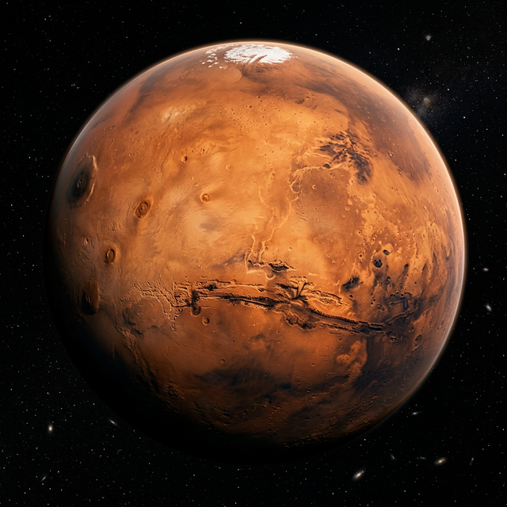
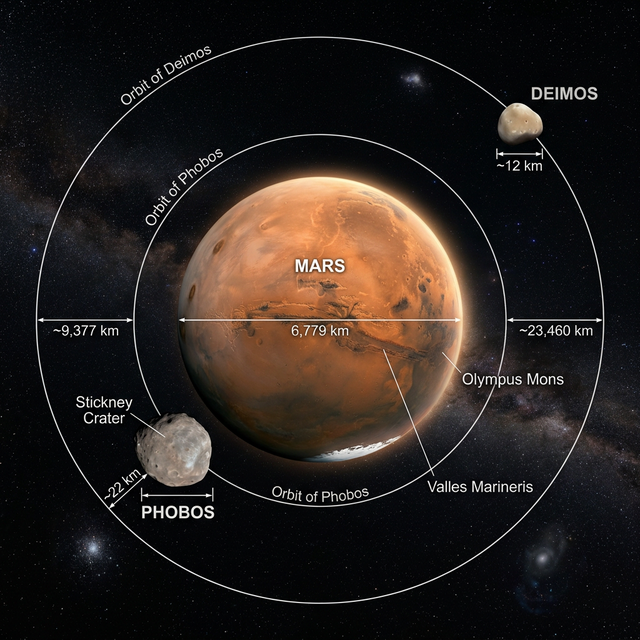

El Sistema Solar és el sistema planetari lligat gravitacionalment al Sol. Inclou els vuit planetes: Mercuri, Venus, Terra, Mart, Júpiter, Saturn, Urà i Neptú.
| Massa | 6,39 × 10^23 kg |
| Volum | 1,6318 × 10^11 km³ |
| Densitat | 3,93 g/cm³ |
| Diàmetre | 6.779 km |
| Gravetat | 3,71 m/s² |
| Pressió | 0,636 kPa |
| Temperatura mín | -143 °C |
| Temperatura màx | 35 °C |
